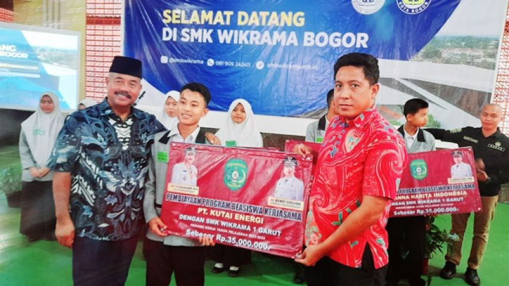
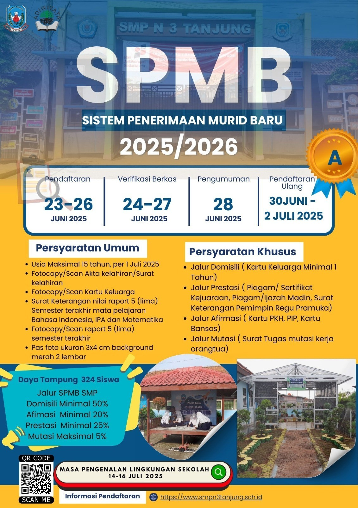
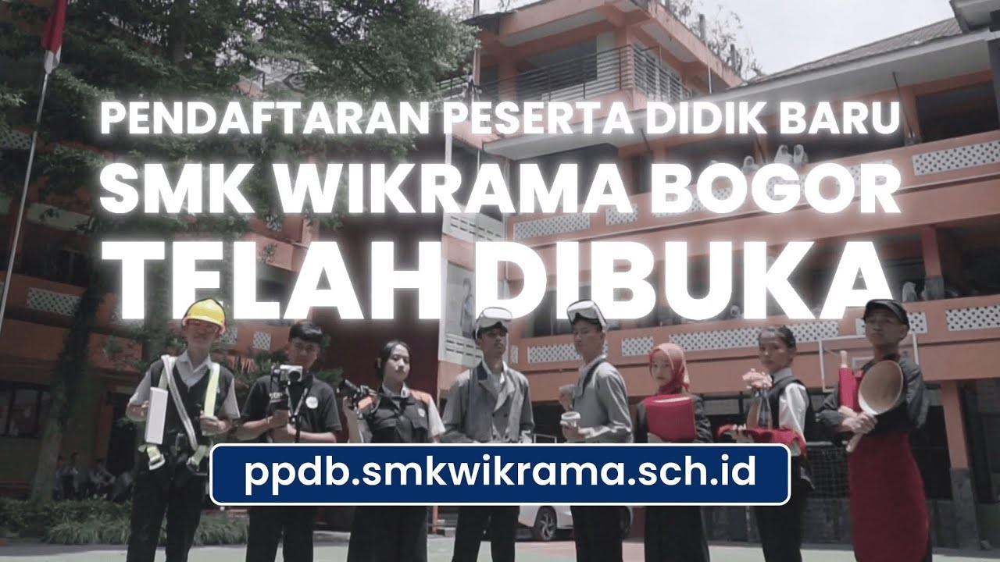

SMK Wikrama Bogor
SMK Wikrama Bogor adalah sekolah menengah kejuruan swasta yang berlokasi di Bogor, Jawa Barat, dan berdiri sejak tahun 1996. Sekolah ini berfokus pada pendidikan berbasis keterampilan serta pembentukan karakter siswa agar siap memasuki dunia kerja, berwirausaha, maupun melanjutkan pendidikan ke jenjang yang lebih tinggi. Selain itu, SMK Wikrama Bogor juga dikenal dengan pembelajaran yang menggabungkan teori dan praktik secara langsung.
Berita Terkini
SMK Wikrama Bogor Sukses Gelar Kegiatan Bakti Sosial untuk Masyarakat

Dalam rangka menumbuhkan jiwa kepedulian sosial, SMK Wikrama Bogor mengadakan kegiatan bakti sosial di lingkungan sekitar sekolah. Kegiatan ini melibatkan siswa dan guru dalam berbagai aksi seperti pembagian sembako, kerja bakti, dan edukasi kebersihan lingkungan. Kegiatan tersebut disambut antusias oleh masyarakat setempat. Selain membantu warga, kegiatan ini juga menjadi sarana pembelajaran bagi siswa untuk meningkatkan empati dan rasa tanggung jawab sosial.
Penerimaan Siswa Baru


Bogor, 2025 - Kabar baik bagi para siswa SMP/MTs yang ingin melanjutkan pendidikan ke jenjang yang lebih tinggi. SMK Wikrama Bogor secara resmi membuka Penerimaan Peserta Didik Baru (PPDB) Tahun Ajaran 2025/2026. Sebagai salah satu sekolah kejuruan unggulan di Indonesia, SMK Wikrama Bogor kembali mengundang generasi muda untuk bergabung dan mengembangkan potensi diri melalui berbagai program keahlian yang relevan dengan kebutuhan industri saat ini. Pada tahun ajaran ini, SMK Wikrama Bogor menawarkan berbagai jurusan unggulan yang dirancang untuk membekali siswa dengan keterampilan, pengetahuan, serta karakter yang kuat. Dengan kurikulum berbasis industri, siswa tidak hanya belajar teori, tetapi juga praktik langsung yang menunjang kesiapan kerja maupun melanjutkan pendidikan ke jenjang lebih tinggi. Kepala sekolah SMK Wikrama Bogor menyampaikan bahwa pembukaan PPDB ini merupakan kesempatan emas bagi calon siswa untuk menjadi bagian dari sekolah yang memiliki budaya disiplin, lingkungan religius, serta prestasi yang membanggakan di tingkat nasional maupun internasional. “SMK Wikrama Bogor berkomitmen mencetak lulusan yang kompeten, berkarakter, dan siap bersaing di dunia global,” ujarnya. Proses pendaftaran dapat dilakukan secara online melalui website resmi SMK Wikrama Bogor. Calon peserta didik diharapkan segera mempersiapkan berkas yang dibutuhkan serta mengikuti seluruh tahapan seleksi sesuai jadwal yang telah ditentukan. Selain itu, sekolah juga menyediakan informasi lengkap terkait jurusan, fasilitas, serta kegiatan siswa yang dapat diakses oleh calon pendaftar dan orang tua. Dengan dibukanya PPDB Tahun Ajaran 2025/2026 ini, SMK Wikrama Bogor berharap dapat menjaring siswa-siswi terbaik dari seluruh Indonesia yang siap belajar, berkembang, dan meraih masa depan gemilang.